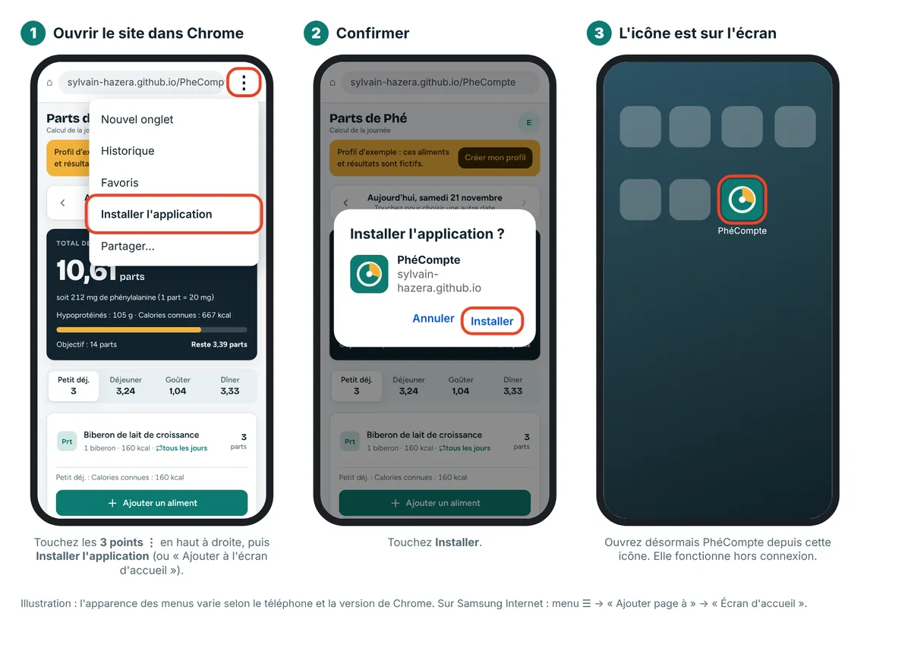
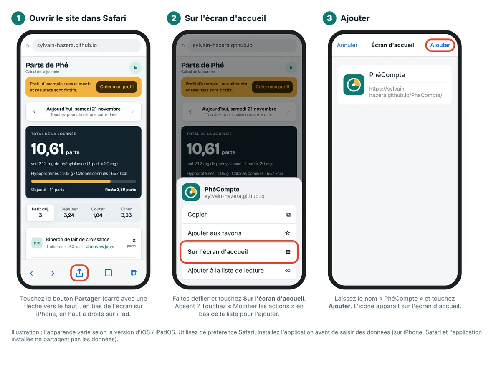
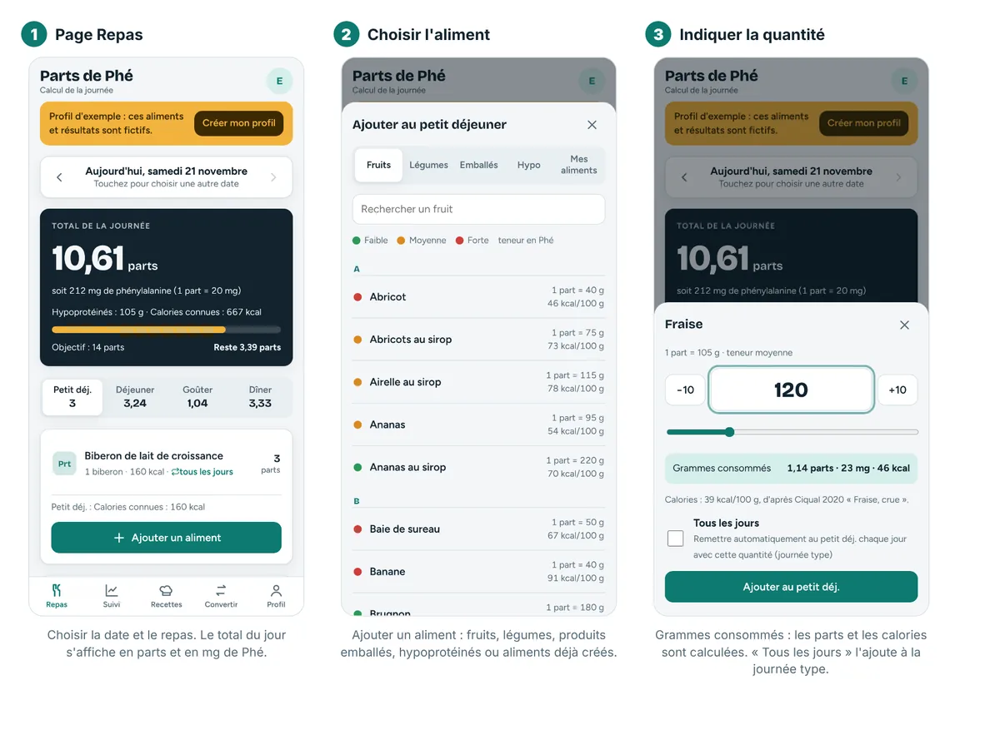
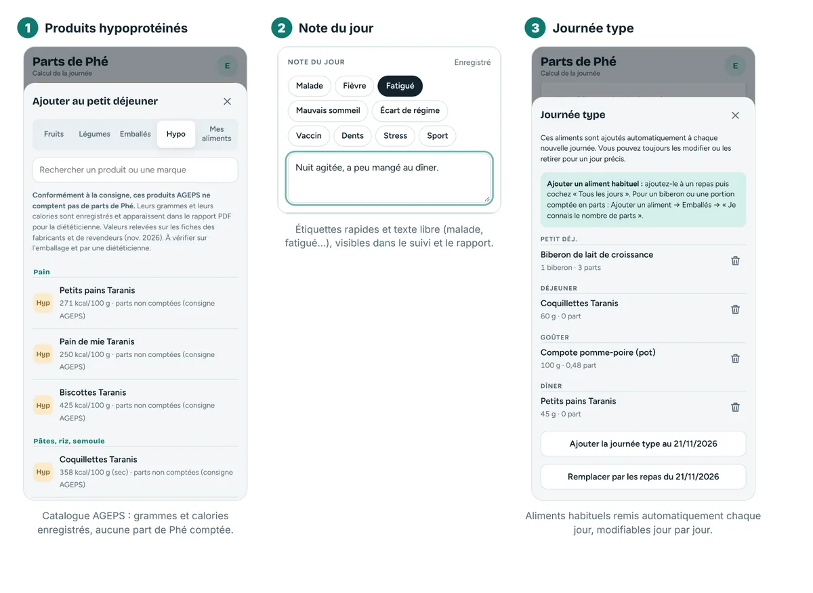
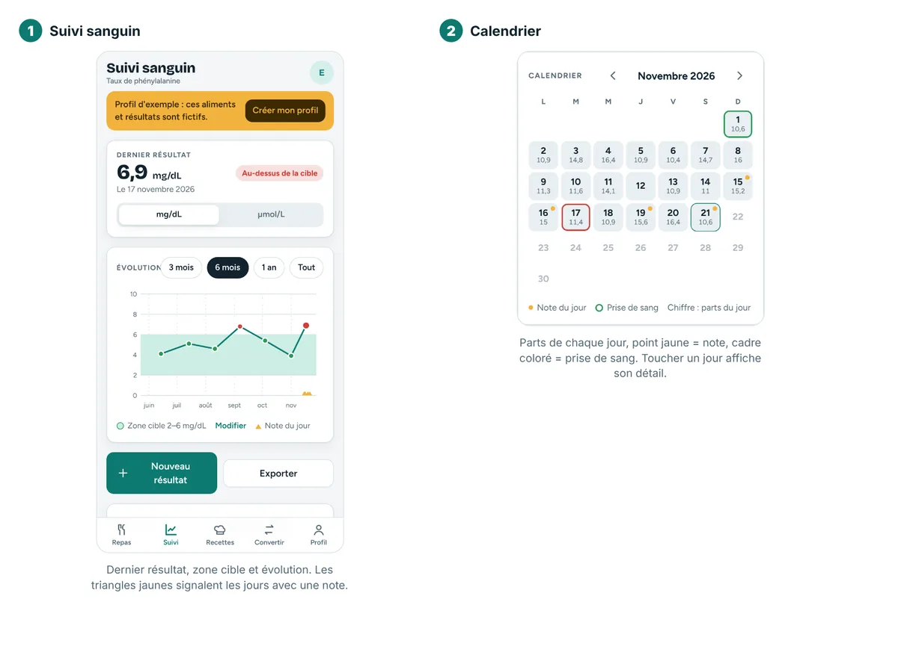
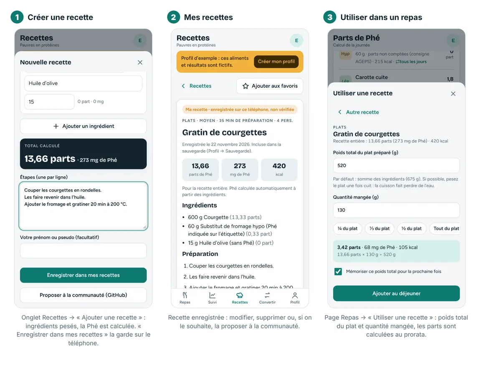
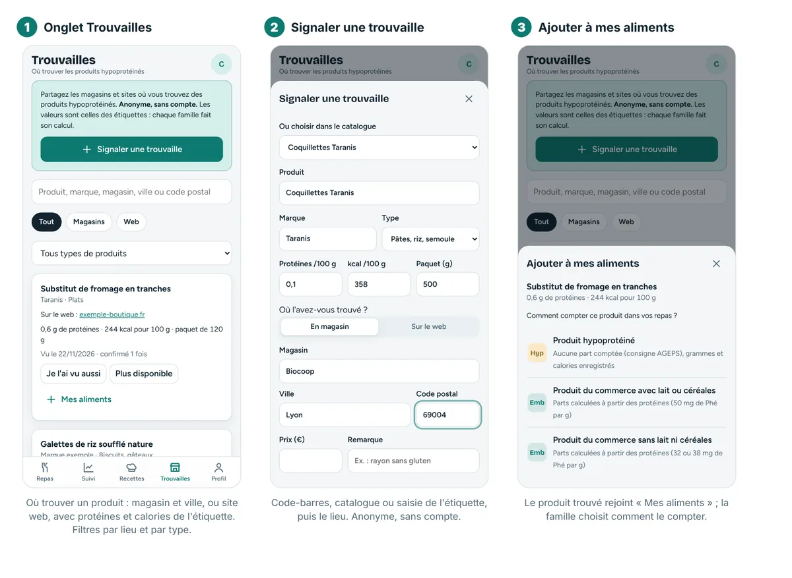
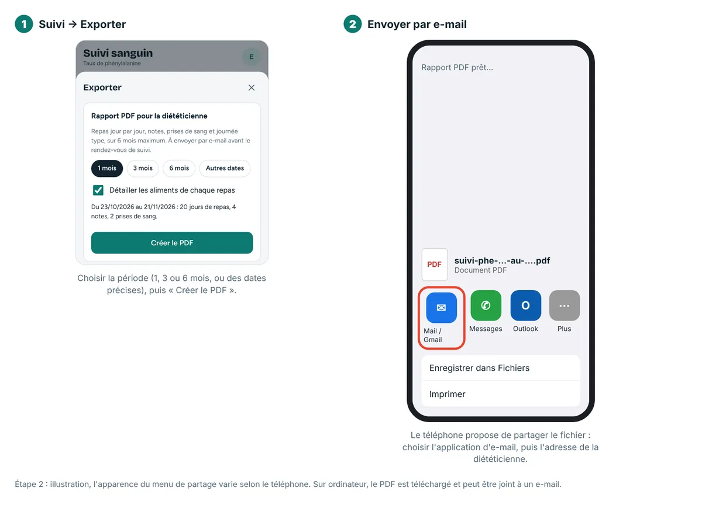
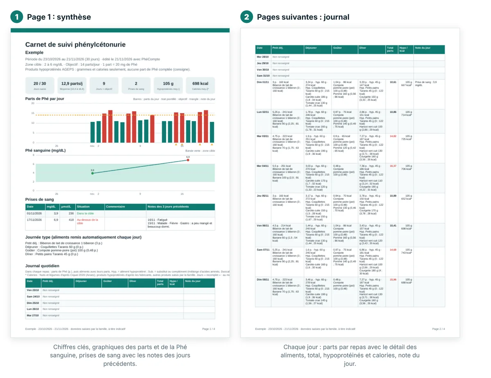

PhéCompte : guide d'utilisation
Présentation
PhéCompte est une application gratuite pour téléphone que nous utilisons pour suivre le régime de notre enfant atteint de phénylcétonurie. Nous souhaitons que vous puissiez lire les rapports qu'elle produit et valider les données qu'elle utilise.
Elle reprend la base d'aliments et les recettes de l'ancienne application aPhetit (2015-2017, conçue avec la SFEIM et l'association Les Feux Follets), qui ne fonctionne plus sur les téléphones récents. Ces données n'ont pas été mises à jour depuis 2017.
| Page | Adresse | Pour qui |
|---|---|---|
| Application | sylvain-hazera.github.io/PheCompte | La famille, sur son téléphone |
| Base d'aliments et relecture | sylvain-hazera.github.io/PheCompte/aliments.html | Vous, sur ordinateur |
L'application fonctionne hors connexion et ne demande aucun compte. C'est un outil d'aide : il ne remplace ni la prescription ni le suivi de l'équipe médicale.
Installer l'application
L'installation se fait une seule fois, avec Internet. Ensuite, l'application s'ouvre depuis son icône, même sans réseau.
Sur Android (Chrome)
- Ouvrir sylvain-hazera.github.io/PheCompte dans Chrome.
- Toucher les 3 points ⋮ en haut à droite, puis « Installer l'application » (ou « Ajouter à l'écran d'accueil »).
- Confirmer avec « Installer ».

Sur iPhone ou iPad (Safari)
- Ouvrir la même adresse dans Safari.
- Toucher le bouton Partager (carré avec une flèche vers le haut), en bas sur iPhone, en haut à droite sur iPad.
- Choisir « Sur l'écran d'accueil », puis « Ajouter ».

Sur iPhone, il faut installer l'application avant de saisir des données : Safari et l'application installée ne partagent pas les données. Les schémas d'installation sont des illustrations ; les menus varient selon le téléphone.
Ce que la famille saisit
La famille enregistre chaque jour les aliments des 4 repas (petit déjeuner, déjeuner, goûter, dîner). L'application compte les parts de Phé avec la règle 1 part = 20 mg de phénylalanine, arrondie au centième.
| Type d'aliment | Ce qui est saisi | Calcul des parts |
|---|---|---|
| Fruits et légumes (166 de la base) | Grammes | Grammes ÷ poids pour 1 part (valeur de la base) |
| Produits du commerce sans aspartame | Protéines pour 100 g lues sur l'étiquette | Avec lait ou céréales : 50 mg de Phé par g de protéines. Sans lait ni céréales : 32 mg/g sous 0,8 g de protéines, 38 mg/g au-delà |
| Portions connues en parts (ex. un biberon) | Nombre de portions | Nombre de parts par portion indiqué par l'équipe |
| Produits hypoprotéinés AGEPS (48 au catalogue) | Grammes | Aucune part comptée (consigne). Grammes et calories enregistrés |
| Substituts (PKU Anamix Junior, Duocal) | Sachets ou doses | Aucune part. Calories enregistrées |
La famille peut aussi enregistrer :
- Une journée type : les aliments habituels (par exemple le biberon du matin) sont remis automatiquement chaque jour. Ils restent modifiables jour par jour.
- Une note du jour : étiquettes rapides (Malade, Fièvre, Fatigué, Mauvais sommeil, Écart de régime, Vaccin, Dents, Stress, Sport) et texte libre.
- Les résultats de prise de sang, en mg/dL ou en µmol/L (1 mg/dL = 60,54 µmol/L ; un convertisseur se trouve dans l'onglet Convertir), avec la zone cible que vous avez fixée.
- Le poids et une cible calorique en kcal par kg et par jour, que vous fixez.
La famille peut enfin créer ses propres recettes et les utiliser dans les repas :
- Mes recettes : ingrédients pesés, la Phé de la recette entière est calculée. La recette reste sur le téléphone, sans compte, et elle est incluse dans la sauvegarde. La proposer à la communauté est facultatif ; l'envoi est anonyme, sans compte.
- Utiliser une recette dans un repas : on indique le poids total du plat préparé et la quantité mangée. Les parts sont calculées par une règle de 3 : parts de la recette × grammes mangés ÷ poids total du plat. Par défaut, le poids total est la somme des ingrédients ; peser le plat une fois cuit est plus juste, car la cuisson fait perdre de l'eau. Les calories suivent la même règle quand la recette les indique.
En images
Les captures montrent le profil d'exemple de l'application (données fictives).
Saisir un repas :

Produits hypoprotéinés, note du jour et journée type :

Suivi sanguin et calendrier :

Recettes personnelles et utilisation dans un repas :

Trouvailles : où trouver les produits
L'onglet Trouvailles permet aux familles de partager où elles trouvent des produits hypoprotéinés : un magasin et une ville, ou un site web. Chaque trouvaille indique les protéines et les calories pour 100 g lues sur l'étiquette, le poids du paquet et, si on le souhaite, le prix. L'application ne juge pas les produits : chaque famille fait son calcul.
- Signaler : par le code-barres (les valeurs sont reprises d'Open Food Facts quand le produit y figure), par le catalogue AGEPS ou en recopiant l'étiquette. L'envoi est anonyme, sans compte.
- Tenir à jour : « Je l'ai vu aussi » ou « Plus disponible », un avis par téléphone et par jour.
- Utiliser : « Mes aliments » ajoute le produit aux aliments de la famille, qui choisit comment le compter (produit AGEPS sans part, ou produit du commerce calculé à partir des protéines).
Les trouvailles sont modérées par nos soins (retrait des signalements erronés ou indésirables).

Le rapport PDF
Avant chaque rendez-vous, nous vous enverrons par e-mail un rapport PDF couvrant au plus les 6 derniers mois. Il se lit de haut en bas :
- En-tête : période, zone cible, objectif de parts par jour, poids et cible calorique.
- Chiffres clés : jours saisis, moyenne de parts par jour (minimum et maximum), jours au-dessus de l'objectif, nombre de prises de sang, grammes d'hypoprotéinés et calories moyennes par jour.
- Graphique des parts par jour : barres rouges au-dessus de l'objectif, triangle jaune les jours avec une note.
- Graphique de la Phé sanguine : points colorés selon la zone cible.
- Tableau des prises de sang : chaque résultat avec les notes des 3 jours précédents (par exemple « Malade · Fièvre » la veille d'un taux élevé).
- Journée type de la période.
- Journal quotidien : pour chaque jour, les parts de chaque repas avec le détail des aliments, le total, les grammes d'hypoprotéinés, les calories et le statut calorique, puis la note du jour. Les jours sans saisie sont indiqués « Non renseigné ».
Dans le journal, « Hyp. » signale un produit hypoprotéiné et « Sub. » un substitut ou complément.
Une recette mangée apparaît sous la forme « Recette : nom », avec les grammes mangés et les parts calculées au prorata. Les valeurs sont figées le jour de la saisie : modifier la recette ensuite ne change pas les jours passés.
Créer et envoyer le rapport
Dans l'onglet Suivi, toucher « Exporter », choisir la période, puis « Créer le PDF ». Le téléphone propose ensuite de l'envoyer par e-mail.

Aperçu d'un rapport (données fictives) :

Calories : sources et limites
Les calories sont connues pour 158 fruits et légumes sur 166, pour les 48 produits du catalogue AGEPS et pour les produits que la famille a complétés. Ces valeurs n'ont pas encore été vérifiées par une diététicienne.
| Aliments | Source | Point d'attention |
|---|---|---|
| Fruits et légumes | Table Ciqual 2020 (Anses), copie publiée sur data.gouv.fr | 78 valeurs directes ; 80 calculées à partir des nutriments Ciqual (protéines et glucides × 4, lipides × 9, fibres × 2, polyols × 2,4) car l'énergie manquait dans cette copie ; 23 correspondances approchées (fruits au sirop rapprochés d'une macédoine au sirop, nashi d'une poire, bolets d'un cèpe) |
| Sans équivalent Ciqual (8) | Aucune | Sapote, sapotille, corossol, nèfle du Japon, pomme-cannelle, feuille de vigne, pourpier, manioc-patisson |
| Produits AGEPS | Fiches des fabricants et de revendeurs (nov. 2026) | Loprofin et Vitaflo : fiches anglaises. Plusieurs produits marqués « à vérifier » |
| Autres produits | Saisis par la famille d'après l'étiquette | Facultatif |
Statut calorique du jour : calories du jour ÷ (cible en kcal/kg × poids).
- Moins de 90 % : cible non atteinte.
- De 90 à 120 % : cible atteinte.
- Plus de 120 % : cible largement dépassée.
Le statut n'apparaît que si tous les aliments du jour ont des calories connues ; sinon le jour est marqué « incomplet ». Le site de l'Anses était en maintenance au moment de l'import : les valeurs seront comparées à la table officielle dès qu'il sera accessible.
Ce que nous vous demandons
Nous aurions besoin de vous pour trois choses, par ordre de priorité.
1. Fixer ou confirmer les réglages de notre enfant
- Objectif de parts de Phé par jour
- Zone cible de Phé sanguine (minimum et maximum)
- Cible calorique en kcal par kg et par jour (repère OMS/FAO 2004 : environ 80 kcal/kg/j entre 1 et 4 ans)
- Seuils du statut calorique (90 % et 120 %) : à garder ou à modifier
- Nombre de parts des portions habituelles (biberon, etc.)
2. Relire la base de données
Sur la page Base d'aliments et relecture, chaque ligne a deux boutons, « Correct » et « À corriger », et un champ de commentaire. Rien n'est envoyé : vos réponses restent dans votre navigateur. Une fois terminé, cliquez sur « Télécharger les remarques (CSV) » et renvoyez-nous le fichier ; nous corrigerons l'application.
La page couvre les 166 fruits et légumes (poids pour 1 part, teneur, calories et correspondance Ciqual), les formules des produits du commerce, les 48 produits AGEPS et les recettes. À vérifier en priorité :
- les poids pour 1 part des fruits et légumes (inchangés depuis 2017) ;
- les correspondances Ciqual marquées « approchée », par exemple la pomme de terre (cuite à l'eau) et la betterave (cuite) ;
- les valeurs des produits AGEPS marquées « à vérifier ».
Une relecture partielle nous aide déjà.
3. Valider les recettes proposées par les familles (facultatif)
Les familles enregistrent leurs recettes sur leur téléphone et peuvent, si elles le souhaitent, les proposer à la communauté ; la Phé est alors recalculée automatiquement. Une recette n'apparaît dans l'application qu'après validation. Vous pouvez nous donner votre avis par e-mail, ou nous pouvons vous donner un accès pour valider directement.
Confidentialité et limites
Les données de santé restent sur le téléphone de la famille : l'application n'a ni compte, ni serveur, ni mesure d'audience. Seul le rapport PDF que nous vous envoyons quitte le téléphone.
- Les calculs dépendent de la saisie de la famille et des valeurs de la base, encore en cours de relecture.
- Les produits AGEPS ne comptent aucune part de Phé, conformément à la consigne ; leur Phé publiée reste visible sur la page de relecture à titre d'information.
- L'application ne propose aucun régime : objectifs, cibles et portions viennent de l'équipe médicale.
Les trouvailles et les recettes envoyées depuis l'application sont anonymes : ni compte, ni nom, ni adresse IP conservée. Un service hébergé chez Cloudflare les reçoit et bloque les envois automatiques (vérification anti-robot).
Sources
- Table de composition nutritionnelle des aliments Ciqual 2020, Anses (data.gouv.fr)
- FAO/OMS/UNU 2004, Human energy requirements, chapitre 4
- Recommandations européennes sur la phénylcétonurie, van Wegberg et al., 2017
PhéCompte © 2025-2026 Sylvain Hazera, tous droits réservés (licence). Outil indicatif : il ne remplace ni l'avis de l'équipe médicale ni le régime prescrit. · Politique de confidentialité